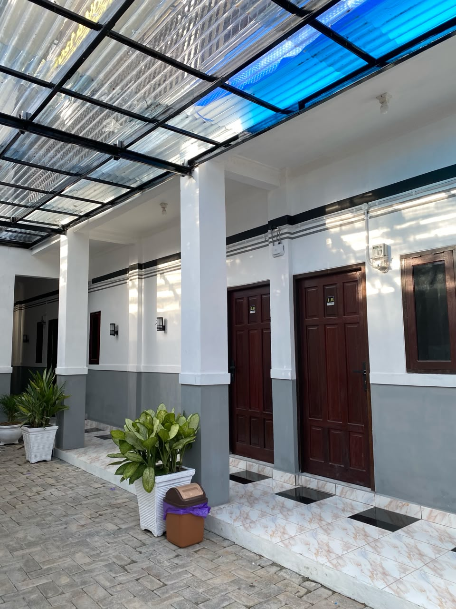
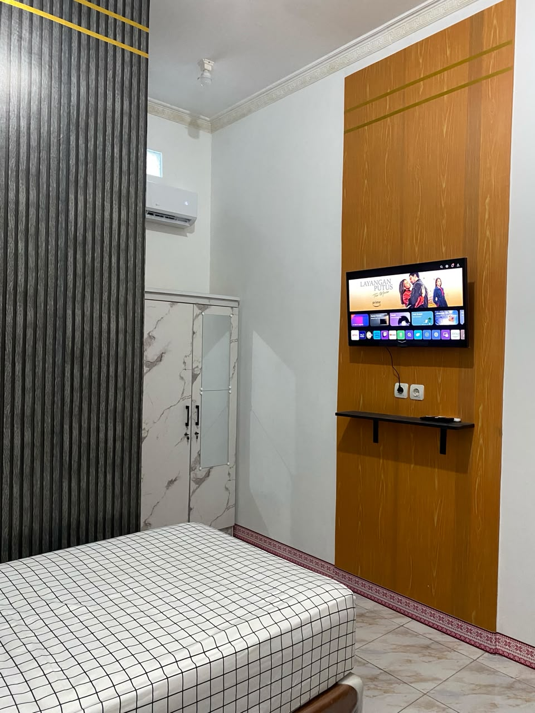
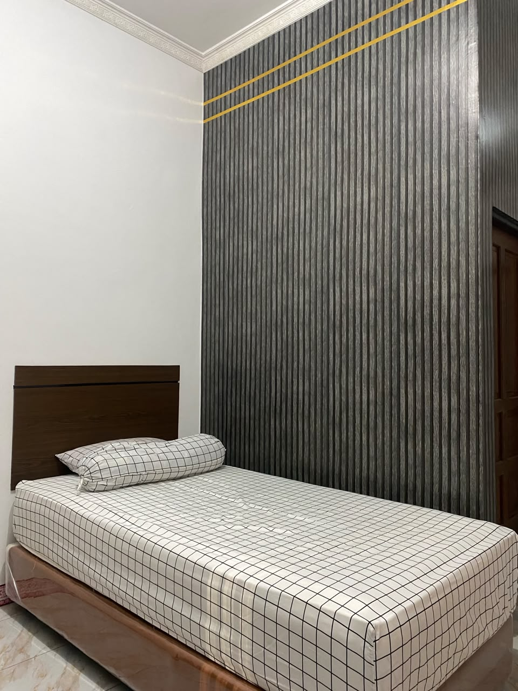

Mengenal lebih dekat melalui biodata, hobi, dan galeri aktivitas.
Menikmati berbagai genre film dan serial menarik di waktu senggang.
Menjaga kesehatan fisik dan kebugaran tubuh lewat lari santai.
Olahraga air yang menyegarkan sekaligus melatih ketahanan tubuh.


